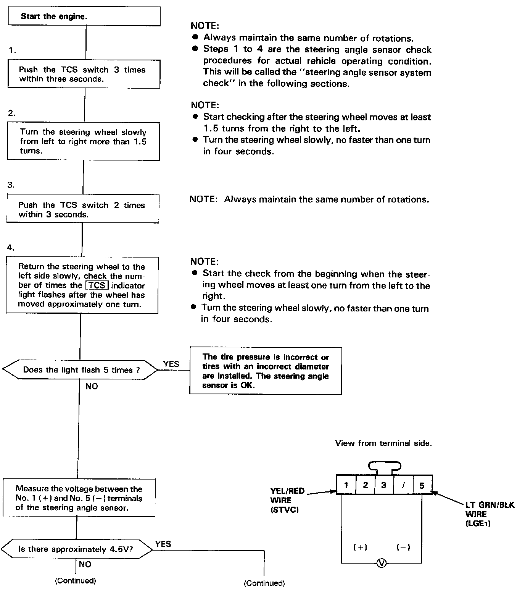
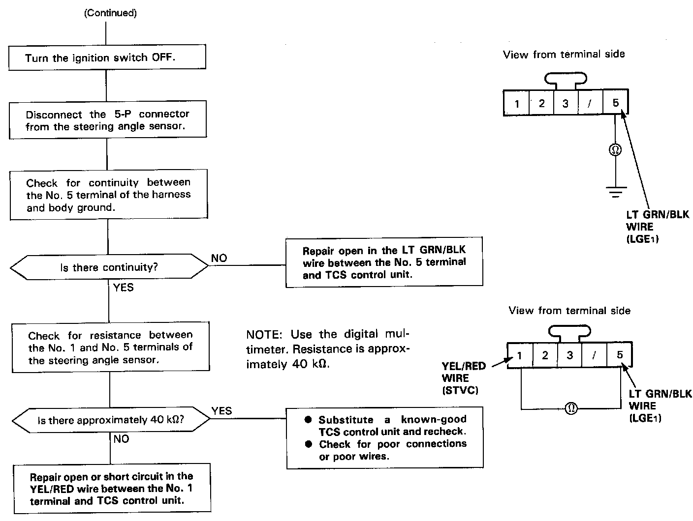
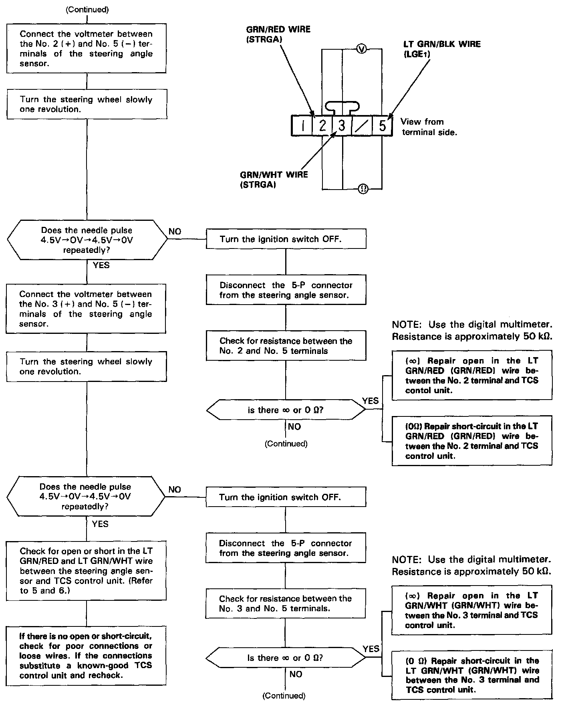
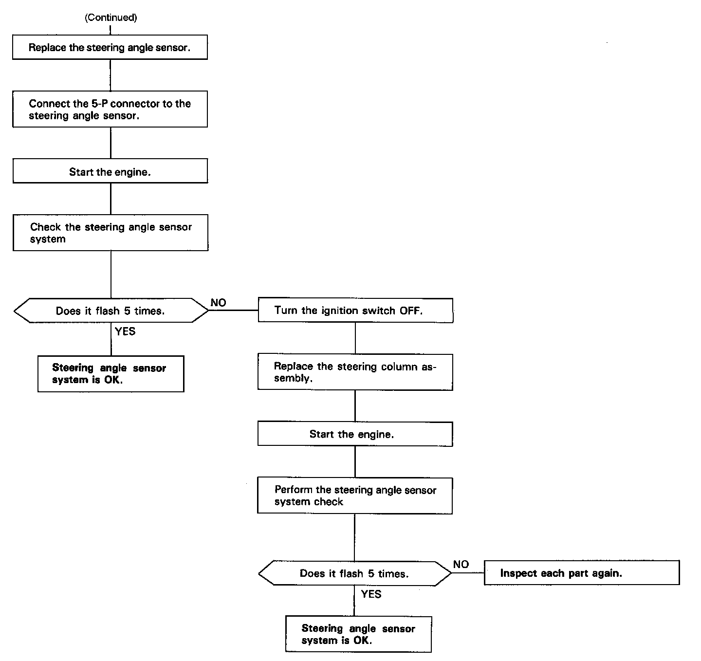

DTC 2-1
Diagnostic Flowchart - Part 1:

Part 2:

Part 3:

Part 4:

NOTE: The TCS control unit performs the self-diagnosis for the steering angle sensor when the average speed of the front two wheels exceeds 10 mph (16 km/h). The TCS indicator light comes on if the yaw rate is generated and the steering angle signal that corresponds to this yaw rate is not input when the steering wheel is turned while there is no input from the STOP (brake light signal) and PARK (Parking brake signal).